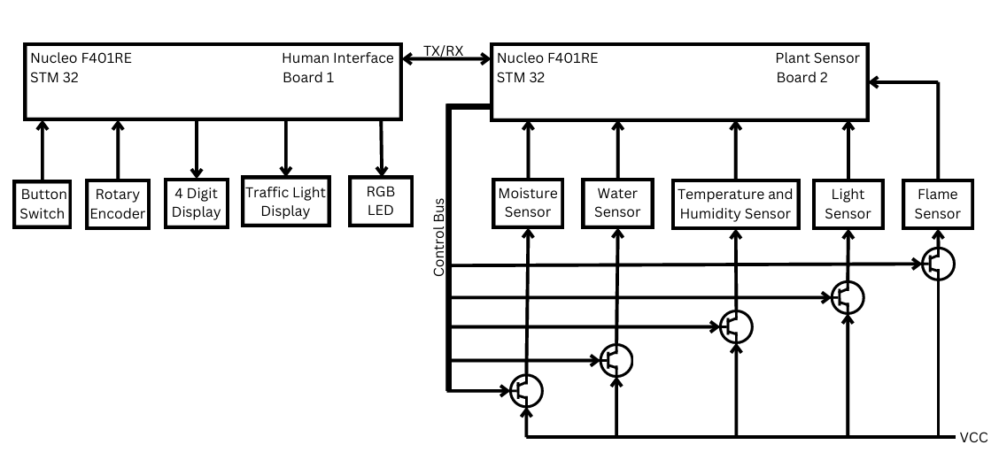
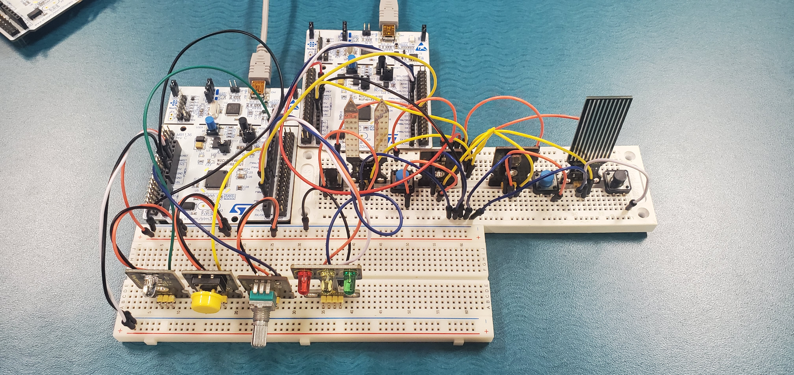
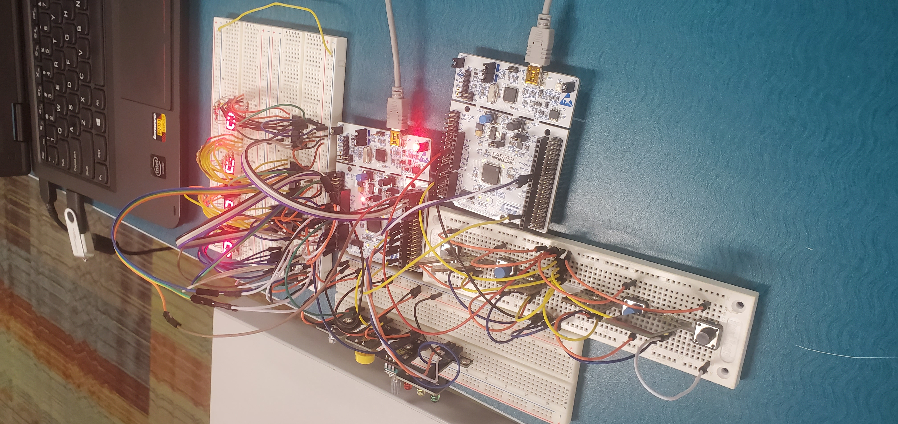

I have made many small microcontroller projects. Read more to find out about them.
Plant Project
View on GitHub ↗For one of my courses in 1A, myself and a team mate were tasked with making anything we wanted using an STM32 Nucleo board. There were only a few requirements. The first one was we needed to solve a problem. Myself and my parten had a habit of killing plants so we decided to make an automatic plant monitor. Another requirement was that we needed to use two boards and get them to talk to each other. We also needed to be able to display something to the user.
I was at this point some what familiar with microcontollers so I implemented all the circuity and code by myself while my partner worked on documentation and meetings. The basic layout of the project is shown below in the schematic. I know that there are transistor symbols, ignore those. I didn't understand how transistors worked and thought they were perfect digital switches so I was going to control power to each sensor by selecting it with the buss line. The idea is that each sensor only was turned on when it was needed to save power because origionally I thought the power required to turn all sensors on was too much. I was wrong after measuring and ended up hooking all sensors up dirrectly.

The idea was that there were 5 sensors that keeped track of the plants health and that data was sent to the user via a 4 digit display. The traffic light was used to indicate the plants health. The rotary encoder (potentiometer) and button were used to look at different sensor data and the RGB LED was for telling the user what sensor they had selected. And yes, I did include a flame sensor. It came with sensors packet I ordered online and thought it would be funny to include. If the plant catches fire the traffic light turns red, in hind sight maybe I should have included an alarm. Below is a photo of the board with the sensors and interface excluding the 4 digit display.

We were not allowed to use any libraries except for communication between the boards so I had to implement the 4 digit display by myself. Below is a photo of the 4 digit display with the sensors and interface. I never intended to share these photos thus why this photo doesn't show the 4 digit display well.

To implement this I used 4 shift regitsters to run each of the 4 7-segment displays. This took me a while to get working but I eventually was able to get it to work. The video below shows it counting. I have automuted the video as I took the video for a friend who had provided me with the shift registers.
Approach
The library is structured around a Layer base class with
forward() and backward() methods. Each layer type
(dense, conv, activation) inherits from it, making it easy to stack layers
into a network.
Gradients are computed analytically and accumulated via the chain rule during the backward pass, then applied by a configurable optimizer (SGD or Adam).
// Example: forward pass through a dense layer
Matrix DenseLayer::forward(const Matrix& input) {
this->input = input;
return activate(weights * input + bias);
}Results
The library successfully trained on several benchmark datasets and served as the base for the map classifier and architecture search projects.
Reflection
Implementing the backward pass manually made the chain rule click in a way that reading about it never did. I also gained a much better intuition for why vanishing gradients happen in deep networks with sigmoid activations.